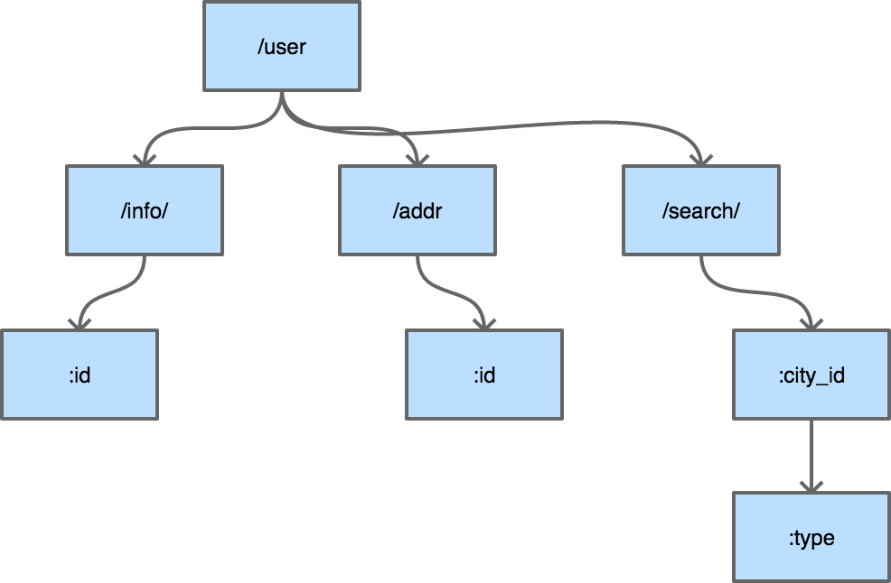
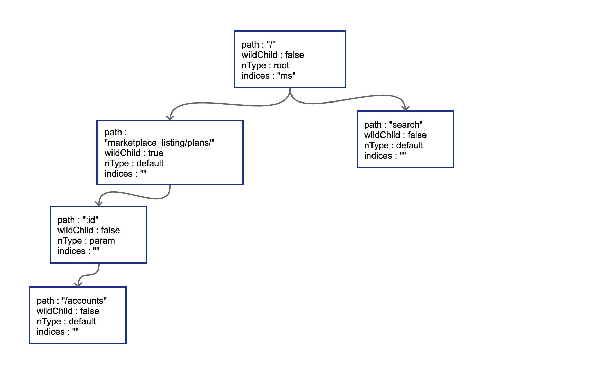

- 凹语言(Go实现, 面向WASM设计): https://github.com/wa-lang/wa
- WaBook(Go语言实现的MD电子书构建工具): https://github.com/wa-lang/wabook
5.2 router 请求路由
在常见的 Web 框架中，router 是必备的组件。Go 语言圈子里 router 也时常被称为 http 的 multiplexer。在上一节中我们通过对 Burrow 代码的简单学习，已经知道如何用 http 标准库中内置的 mux 来完成简单的路由功能了。如果开发 Web 系统对路径中带参数没什么兴趣的话，用 http 标准库中的 mux 就可以。
RESTful 是几年前刮起的 API 设计风潮，在 RESTful 中除了 GET 和 POST 之外，还使用了 HTTP 协议定义的几种其它的标准化语义。具体包括：
const (
MethodGet = "GET"
MethodHead = "HEAD"
MethodPost = "POST"
MethodPut = "PUT"
MethodPatch = "PATCH" // RFC 5789
MethodDelete = "DELETE"
MethodConnect = "CONNECT"
MethodOptions = "OPTIONS"
MethodTrace = "TRACE"
)
来看看 RESTful 中常见的请求路径：
GET /repos/:owner/:repo/comments/:id/reactions
POST /projects/:project_id/columns
PUT /user/starred/:owner/:repo
DELETE /user/starred/:owner/:repo
相信聪明的你已经猜出来了，这是 Github 官方文档中挑出来的几个 API 设计。RESTful 风格的 API 重度依赖请求路径。会将很多参数放在请求 URI 中。除此之外还会使用很多并不那么常见的 HTTP 状态码，不过本节只讨论路由，所以先略过不谈。
如果我们的系统也想要这样的 URI 设计，使用标准库的 mux 显然就力不从心了。
5.2.1 httprouter
较流行的开源 go Web 框架大多使用 httprouter，或是基于 httprouter 的变种对路由进行支持。前面提到的 Github 的参数式路由在 httprouter 中都是可以支持的。
因为 httprouter 中使用的是显式匹配，所以在设计路由的时候需要规避一些会导致路由冲突的情况，例如：
conflict:
GET /user/info/:name
GET /user/:id
no conflict:
GET /user/info/:name
POST /user/:id
简单来讲的话，如果两个路由拥有一致的 http 方法 (指 GET、POST、PUT、DELETE) 和请求路径前缀，且在某个位置出现了 A 路由是 wildcard（指 :id 这种形式）参数，B 路由则是普通字符串，那么就会发生路由冲突。路由冲突会在初始化阶段直接 panic：
panic: wildcard route ':id' conflicts with existing children in path '/user/:id'
goroutine 1 [running]:
github.com/cch123/httprouter.(*node).insertChild(0xc4200801e0, 0xc42004fc01, 0x126b177, 0x3, 0x126b171, 0x9, 0x127b668)
/Users/caochunhui/go_work/src/github.com/cch123/httprouter/tree.go:256 +0x841
github.com/cch123/httprouter.(*node).addRoute(0xc4200801e0, 0x126b171, 0x9, 0x127b668)
/Users/caochunhui/go_work/src/github.com/cch123/httprouter/tree.go:221 +0x22a
github.com/cch123/httprouter.(*Router).Handle(0xc42004ff38, 0x126a39b, 0x3, 0x126b171, 0x9, 0x127b668)
/Users/caochunhui/go_work/src/github.com/cch123/httprouter/router.go:262 +0xc3
github.com/cch123/httprouter.(*Router).GET(0xc42004ff38, 0x126b171, 0x9, 0x127b668)
/Users/caochunhui/go_work/src/github.com/cch123/httprouter/router.go:193 +0x5e
main.main()
/Users/caochunhui/test/go_web/httprouter_learn2.go:18 +0xaf
exit status 2
还有一点需要注意，因为 httprouter 考虑到字典树的深度，在初始化时会对参数的数量进行限制，所以在路由中的参数数目不能超过 255，否则会导致 httprouter 无法识别后续的参数。不过这一点上也不用考虑太多，毕竟 URI 是人设计且给人来看的，相信没有长得夸张的 URI 能在一条路径中带有 200 个以上的参数。
除支持路径中的 wildcard 参数之外，httprouter 还可以支持 * 号来进行通配，不过 * 号开头的参数只能放在路由的结尾，例如下面这样：
Pattern: /src/*filepath
/src/ filepath = ""
/src/somefile.go filepath = "somefile.go"
/src/subdir/somefile.go filepath = "subdir/somefile.go"
这种设计在 RESTful 中可能不太常见，主要是为了能够使用 httprouter 来做简单的 HTTP 静态文件服务器。
除了正常情况下的路由支持，httprouter 也支持对一些特殊情况下的回调函数进行定制，例如 404 的时候：
r := httprouter.New()
r.NotFound = http.HandlerFunc(func(w http.ResponseWriter, r *http.Request) {
w.Write([]byte("oh no, not found"))
})
或者内部 panic 的时候：
r.PanicHandler = func(w http.ResponseWriter, r *http.Request, c interface{}) {
log.Printf("Recovering from panic, Reason: %#v", c.(error))
w.WriteHeader(http.StatusInternalServerError)
w.Write([]byte(c.(error).Error()))
}
目前开源界最为流行（star 数最多）的 Web 框架 gin 使用的就是 httprouter 的变种。
5.2.2 原理
httprouter 和众多衍生 router 使用的数据结构被称为压缩字典树（Radix Tree）。读者可能没有接触过压缩字典树，但对字典树（Trie Tree）应该有所耳闻。图 5-1 是一个典型的字典树结构：

图 5-1 字典树
字典树常用来进行字符串检索，例如用给定的字符串序列建立字典树。对于目标字符串，只要从根节点开始深度优先搜索，即可判断出该字符串是否曾经出现过，时间复杂度为 O(n)，n 可以认为是目标字符串的长度。为什么要这样做？字符串本身不像数值类型可以进行数值比较，两个字符串对比的时间复杂度取决于字符串长度。如果不用字典树来完成上述功能，要对历史字符串进行排序，再利用二分查找之类的算法去搜索，时间复杂度只高不低。可认为字典树是一种空间换时间的典型做法。
普通的字典树有一个比较明显的缺点，就是每个字母都需要建立一个孩子节点，这样会导致字典树的层数比较深，压缩字典树相对好地平衡了字典树的优点和缺点。是典型的压缩字典树结构：

图 5-2 压缩字典树
每个节点上不只存储一个字母了，这也是压缩字典树中 “压缩” 的主要含义。使用压缩字典树可以减少树的层数，同时因为每个节点上数据存储也比通常的字典树要多，所以程序的局部性较好（一个节点的 path 加载到 cache 即可进行多个字符的对比），从而对 CPU 缓存友好。
5.2.3 压缩字典树创建过程
我们来跟踪一下 httprouter 中，一个典型的压缩字典树的创建过程，路由设定如下：
PUT /user/installations/:installation_id/repositories/:repository_id
GET /marketplace_listing/plans/
GET /marketplace_listing/plans/:id/accounts
GET /search
GET /status
GET /support
补充路由：
GET /marketplace_listing/plans/ohyes
最后一条补充路由是我们臆想的，除此之外所有 API 路由均来自于 api.github.com。
5.2.3.1 root 节点创建
httprouter 的 Router 结构体中存储压缩字典树使用的是下述数据结构：
// 略去了其它部分的 Router struct
type Router struct {
// ...
trees map[string]*node
// ...
}
trees 中的 key 即为 HTTP 1.1 的 RFC 中定义的各种方法，具体有：
GET
HEAD
OPTIONS
POST
PUT
PATCH
DELETE
每一种方法对应的都是一棵独立的压缩字典树，这些树彼此之间不共享数据。具体到我们上面用到的路由，PUT 和 GET 是两棵树而非一棵。
简单来讲，某个方法第一次插入的路由就会导致对应字典树的根节点被创建，我们按顺序，先是一个 PUT：
r := httprouter.New()
r.PUT("/user/installations/:installation_id/repositories/:reposit", Hello)
这样 PUT 对应的根节点就会被创建出来。把这棵 PUT 的树画出来：

图 5-3 插入路由之后的压缩字典树
radix 的节点类型为 *httprouter.node，为了说明方便，我们留下了目前关心的几个字段：
path: 当前节点对应的路径中的字符串
wildChild: 子节点是否为参数节点，即 wildcard node，或者说 :id 这种类型的节点
nType: 当前节点类型，有四个枚举值: 分别为 static/root/param/catchAll。
static // 非根节点的普通字符串节点
root // 根节点
param // 参数节点，例如 :id
catchAll // 通配符节点，例如 *anyway
indices：子节点索引，当子节点为非参数类型，即本节点的 wildChild 为 false 时，会将每个子节点的首字母放在该索引数组。说是数组，实际上是个 string。
当然，PUT 路由只有唯一的一条路径。接下来，我们以后续的多条 GET 路径为例，讲解子节点的插入过程。
5.2.3.2 子节点插入
当插入 GET /marketplace_listing/plans 时，类似前面 PUT 的过程，GET 树的结构如 图 5-4：

图 5-4 插入第一个节点的压缩字典树
因为第一个路由没有参数，path 都被存储到根节点上了。所以只有一个节点。
然后插入 GET /marketplace_listing/plans/:id/accounts，新的路径与之前的路径有共同的前缀，且可以直接在之前叶子节点后进行插入，那么结果也很简单，插入后的树结构见 图 5-5:

图 5-5 插入第二个节点的压缩字典树
由于 :id 这个节点只有一个字符串的普通子节点，所以 indices 还依然不需要处理。
上面这种情况比较简单，新的路由可以直接作为原路由的子节点进行插入。实际情况不会这么美好。
5.2.3.3 边分裂
接下来我们插入 GET /search，这时会导致树的边分裂，见 图 5-6。

图 5-6 插入第三个节点，导致边分裂
原有路径和新的路径在初始的 / 位置发生分裂，这样需要把原有的 root 节点内容下移，再将新路由 search 同样作为子节点挂在 root 节点之下。这时候因为子节点出现多个，root 节点的 indices 提供子节点索引，这时候该字段就需要派上用场了。"ms" 代表子节点的首字母分别为 m（marketplace）和 s（search）。
我们一口作气，把 GET /status 和 GET /support 也插入到树中。这时候会导致在 search 节点上再次发生分裂，最终结果见 图 5-7：

图 5-7 插入所有路由后的压缩字典树
5.2.3.4 子节点冲突处理
在路由本身只有字符串的情况下，不会发生任何冲突。只有当路由中含有 wildcard（类似 :id）或者 catchAll 的情况下才可能冲突。这一点在前面已经提到了。
子节点的冲突处理很简单，分几种情况：
- 在插入 wildcard 节点时，父节点的 children 数组非空且 wildChild 被设置为 false。例如：
GET /user/getAll和GET /user/:id/getAddr，或者GET /user/*aaa和GET /user/:id。 - 在插入 wildcard 节点时，父节点的 children 数组非空且 wildChild 被设置为 true，但该父节点的 wildcard 子节点要插入的 wildcard 名字不一样。例如：
GET /user/:id/info和GET /user/:name/info。 - 在插入 catchAll 节点时，父节点的 children 非空。例如：
GET /src/abc和GET /src/*filename，或者GET /src/:id和GET /src/*filename。 - 在插入 static 节点时，父节点的 wildChild 字段被设置为 true。
- 在插入 static 节点时，父节点的 children 非空，且子节点 nType 为 catchAll。
只要发生冲突，都会在初始化的时候 panic。例如，在插入我们臆想的路由 GET /marketplace_listing/plans/ohyes 时，出现第 4 种冲突情况：它的父节点 marketplace_listing/plans/ 的 wildChild 字段为 true。
 |  |